Leeds Arts University exhibition
Mixed up: music and the art school
Feature - Paul Fillingham, February 2025
A new exhibition curated by Associate Professor and University Curator Marianna Tsionki, Leeds Arts University, and Gavin Butt, Professor of Fine Art, Northumbria University, looks at the phenomenon of art school bands in Leeds during the 1970s and early 80s.
Mixed up: music and the art school
14 February - 17 April 2025
Blenheim Walk Gallery, Leeds Arts University
Central to the exhibition is how punk and post-punk DIY culture related to the teaching and resources of three art schools in Leeds - Jacob Kramer College, University of Leeds, and Leeds Polytechnic. Rejecting traditional hierarchies and commercial pressures, students at these institutions embraced independence and collective creativity, deeply shaping music culture.
Image gallery of the exhibition launch
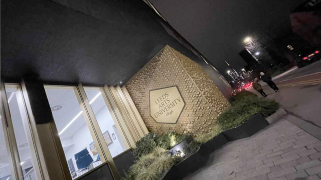
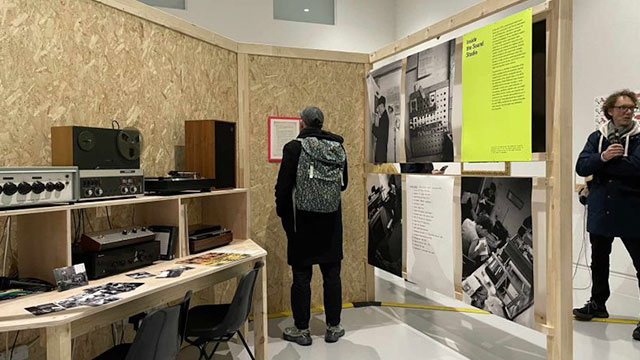
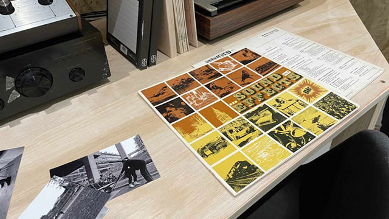
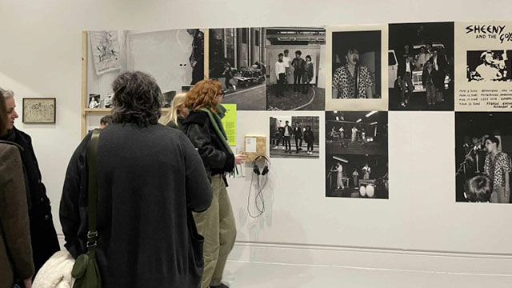
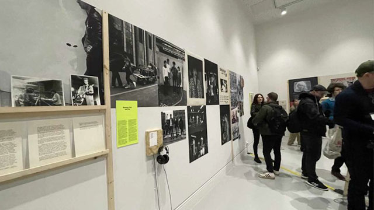
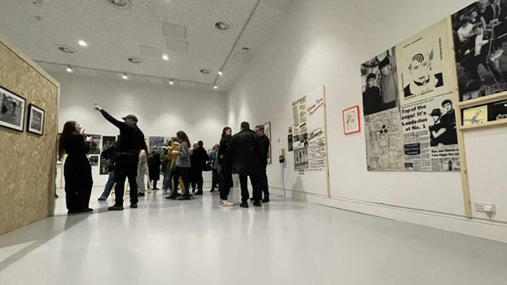
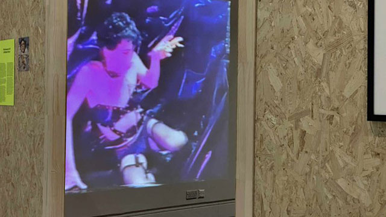
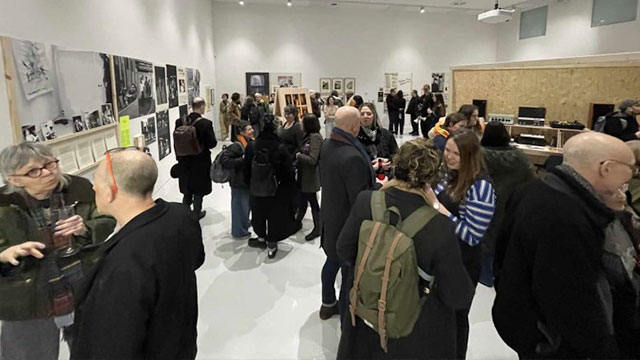
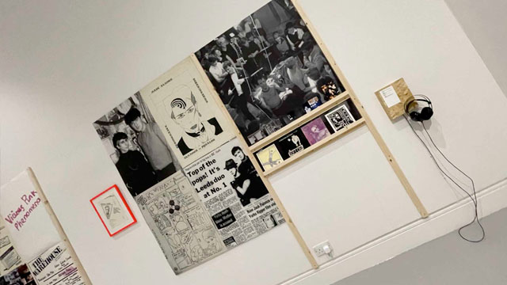
Multidisciplinary art practice at Leeds Polytechnic
In 1977, when I began my journey from mining village to art school, there was an expectation that in addition to painting canvases, life drawing, and dislocating your shoulder lugging around an A1-sized portfolio, I would become involved in an art school band.
That point came in 1980, when I was accepted on the Fine Art Degree course at Leeds Polytechnic. The school was housed in an open-plan studio the size of an aircraft-hangar, with a mezzanine leading to a series of small painting cubicles, a life-drawing studio and a sound studio. The main hangar also housed a self-contained performance area that was painted black and equipped with seating and theatre lighting.
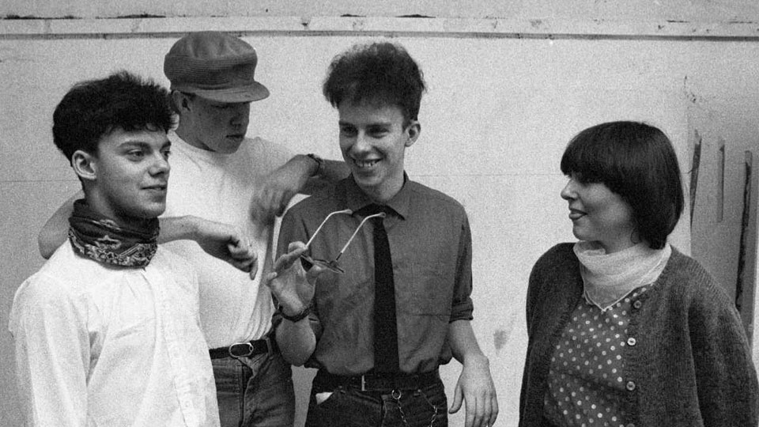
About the Fine Art Sound Studio
The school promoted an ethos of multi-disciplinary art practice, enabling students to move between visual arts, conceptual arts and performance - often blurring the lines between these disciplines. Our lecturers, largely informed by their own practice and involvement in sixties counter culture, encouraged rebellion and experimental forms of creative expression.
I was a proficient draftsman and painter when I arrived at Leeds. I had previous experience of exhibiting works publicly and some recognition for a mural painted for the National Union of Mineworkers. So, it's revealing that I didn't do a single life drawing at Leeds, I abandoned the persona of the solitary artist and found myself drawn to more collaborative work like art performance and music. This activity was fuelled by an increasing interest in music technology and popular culture. It also represented something that was relatable to young people in the communities where I grew up, and the clubland that we frequented - places like Leeds Warehouse and the Cosmo Club, or back in my native Nottingham, Rock City and The Palais.
The Fine Art Sound Studio had fallen into disrepair after the departure of its founder, lecturer John Darling. But the space was at least defined as an area in which students could experiment with sound. When the department needed someone to manage sound studio bookings, I volunteered, placing myself and fellow student Russ Fisher in a good position to make week-long bookings, every term.
Are you Goth, Futurist, Indie or Experimental?
We were already experimenting with music at the student halls in Becket Park and were aware of the legacy of indie, new-wave, goth, and futurist acts - people like Fad Gadget and Soft Cell (we rarely used the phrase 'punk'). These acts along with Polytechnic contemporaries, and others from the University of Leeds and Jacob Kramer College, had managed to cross-over from art education into the world of popular music as championed by BBC Radio One DJ, John Peel. Some released vinyl records. We attended their performances at local venues, and were familiar with events like the Futurama festival.
Russ and I consumed their output voraciously, the collectable singles, bootleg tapes of live gigs, fanzines and pop music press articles - our sketchbooks were full of this stuff. Booking the Fine Art Sound Studio meant that we could invite collaborators to join us, including my guitarist friend Chris Richards, who was studying graphic design at Liverpool Polytechnic, and keyboard player Rose Macpherson, a non-student who worked with local church charities. Chris and I had met on an A-Level Arts Course at Clarendon College Nottingham. We shared the same taste in music and had made some recordings that were tongue-in-cheek parodies. After leaving Nottingham we exchanged cuttings from newspapers and pop magazines, photos and sketches, in the form of mail art, and Chris became an unofficial member of Leeds Fine Art department, regularly working alongside us in the sound studio.
Throughout 1981, we shifted from experimental sounds, to composing songs, paving the way for the Smart Cookies which became more clearly identified as a pop band. The arrival of bass player Bob Smith (who joined the art course when we were into our second year) completed the line-up. He also had a Dr Rhythm drum machine, which was subsequently replaced with a Roland TR808 Rhythm Composer (financed by my student grant) - to create our drum sound.
Professional vs consumer recording equipment
Most of the analogue recording equipment in the studio was old and prone to unexpected feedback loops, crackles and alarming electrical surges. It could get very scary in the sound studio. We eventually abandoned the reel-to-reel tape machines for our own modern stereo cassette recorders. Playing live through the air and recording into the built-in condenser mics, was a more immediate way of working, allowing us to develop songs quickly.
Curator's callout
In January 2025, I received emails from Gavin and Curatorial Assistant Ruth Viccars, outlining their plans for the show at Leeds Arts University and appealing for archive material. Luckily, most of the black and white photographs shot during our time as students were converted to digital formats over twenty years ago, which meant they could be made available with just a few keystrokes.
Student photography in the 70s and 80s
The democratised form of image-making, retrieval and sharing that we experience today is a far cry from the laborious process we endured as students. This involved crawling head-first into a sleeping bag in order to transfer the exposed film safely from the 35mm film cassette to developing tank. Sometimes it was a bit of a struggle, blindly cracking open the cassette by thumping it on the floor, then twisting the exposed film onto a plastic spiral, before sealing it in the light-proof cylinder, which inevitably cross-threaded as you were running out of air.
The next step could be completed in daylight, and involved pouring noxious chemicals into the black plastic tank to develop the film. Hanging the ghostly negatives up to dry was always exciting - inspecting them with an eyeglass, and guessing which shots would print-up OK - because you could never really tell.
Print and reveal
Next up was the photographic enlarger, purchased from my woodwork teacher, which combined with chemical trays and a pack of Kodak or Ilford photo-paper, would be used after nightfall. Printing the photographs was always much more forgiving, bathed in a red safelight, to the sound of The John Peel Show on Radio One - rocking the stinking chemicals back and forth, over the photo-paper until the image finally revealed itself... then more drying! And finally - the next day we would, as vain pop hopefuls, agonise over the best image for the cover for our next demo cassette or local fanzine.
Life after art school
Beyond art school, we were ill prepared for employment in the outside world. I eventually found my niche in audio-visual production, then desktop publishing, and later, interactive design. It was some years until I returned to Leeds, working in a web design company from 1998 to 2010, and more recently as a digital consultant.
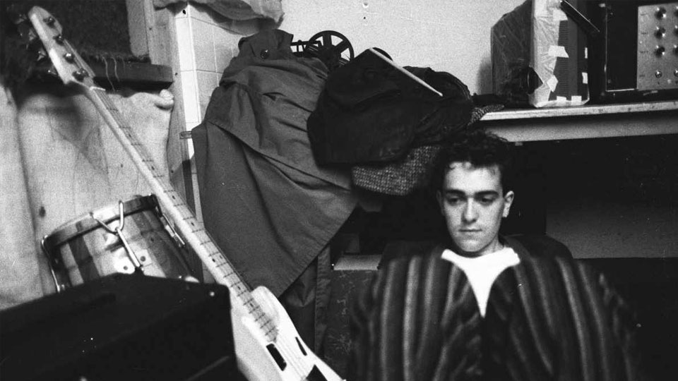
Fresh eyes
Viewing the student images today, I find myself noticing details that would have been invisible the first time around. I've become immune to the shock of the haircuts and clothing that we wore back then. It was all very DIY and tribal in the 80's - music meant something - it was important to our identity, and I can't help but wonder what a contemporary audience makes of it all? From this perspective, it was interesting to relinquish curatorial control to another cohort, who would perhaps see things very differently.
Collaboration, collage and camaraderie
As fine art students at Leeds Polytechnic, the image-making and collaborative performance and camaraderie of being in a band were as important as making the music. Composing songs from newspaper headlines and overhead phrases was in essence, collage. We consciously followed the cut-up techniques pioneered by Dadaist Tristran Tzara, beat poet William Burroughs, performance artist Brion Gysin, and of course, the pop musician David Bowie.
When constructing lyrics using the cut-up method, guitarist Chris Richards and myself would pick annotated slips of paper from a box, at random, assembling them to construct interesting phrases. Since some of the words were lifted from diaries, they included the names of our friends and acquaintances. The effect of juxtaposing names against random phrases was sometimes comical, other times magical, and on a few occasions had a chilling tone to them, and we would have to stop pulling the words out, because the emerging sentence looked like some kind of curse!
Inside the cover of my many pocket sketchbooks, I would write the phrase 'Trivia for the Initiated'. These books were filled with cuttings, drawings, observations, and drum pattern notation for the band's Roland TR808 Rhythm Composer. Decades later, this physical activity would present itself in the form of social media - capturing, mashing-up and sharing media clips and daily observations - who knew, that most of the worlds population would one day, engage in this compulsive activity on mobile phones?
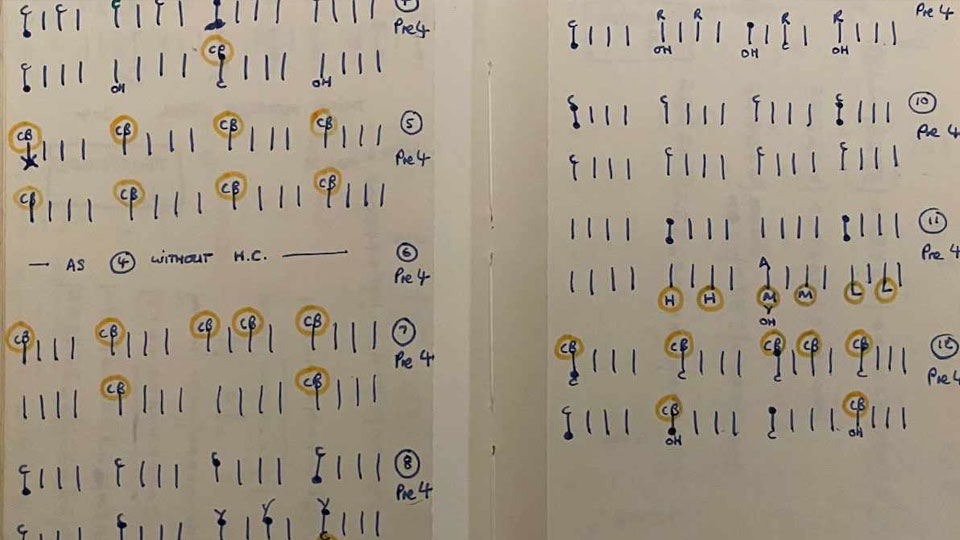
Cookie crumble and computer chips
The Smart Cookies aesthetic was largely playful, and rooted in the sounds and iconography of our childhood. We had fun in the studio, an approach which seemed different to that of our predecessors. This shift from agitprop to pop is documented in Gavin's book No Machos or Pop Stars.
The band went through a number of line ups following creative differences, and our friendships were sorely tested without the protection of the art school environment. We were ultimately crushed by the indifference of major music recording labels and the need to earn a living.
In 1984, I sold the TR808, purchased a BBC Microcomputer, taught myself BASIC programming, and shortly afterwards discovered the Apple Macintosh - which has remained my main creative tool ever since.
Chris and I reformed briefly around 1986 working with a real drummer, incorporating video and low-cost digital samplers into live performance. Then again in 2004, when we released a Smart Cookies EP on the Apple iTunes Store. This was recorded as a duo and mastered with digital instruments using Logic Pro software. That was twenty years ago, and we have not collaborated since. And whilst music technology is readily available and relatively low cost compared with the fortunes we spent as students, I'm too preoccupied with other creative projects - which is probably a good thing!
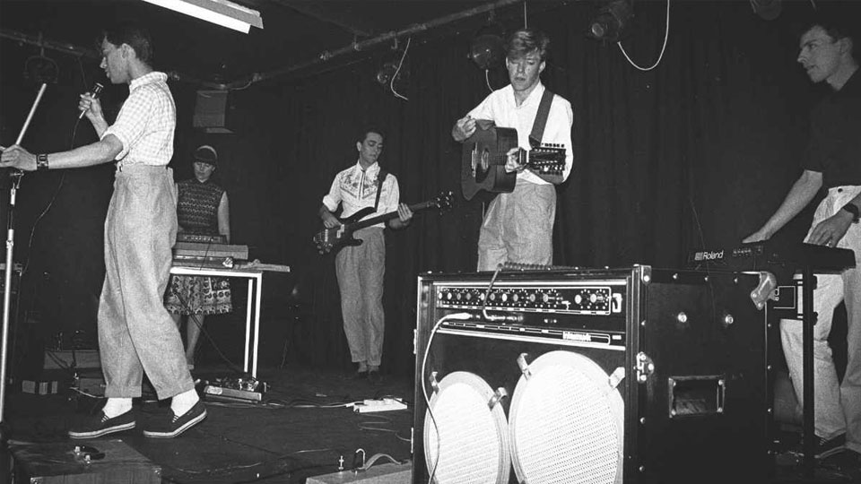
Most of our early output was released on music cassettes which were duplicated, then distributed to Club and Radio DJs, fanzines, friends, and sold through the legendary Jumbo Records. Early demo tapes received praise from the music press in 1983-84, but most of our recordings have now disappeared from the public domain.
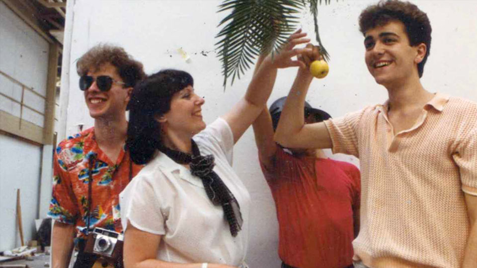